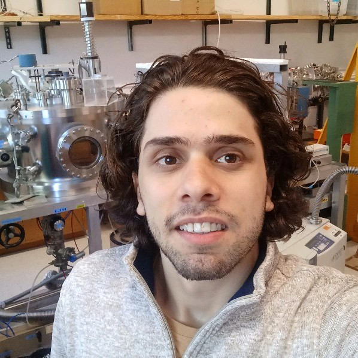

Ahmad Alqaisi

I am a PhD student (since January 2024) at the Department of Physics at Indiana University, advised by Prof. Jon Urheim.
Currently I am involved in DUNE (Deep Underground Neutrino Experiment). Specifically, I work on Photon Detection Systems (PDS) in the ProtoDUNE Vertical Drift Detector.
Prior to Indiana University, I obtained a master's degree in materials science and engineering from Arizona State University, department of Materials Science and Engineering (May 2023). (Download my CV)
News
- [Jan 29, 2026] I made a presentation regarding my latest research on Photon Detection.
- [May 19, 2025] Traveled to Fermilab for the DUNE collaboration meeting.